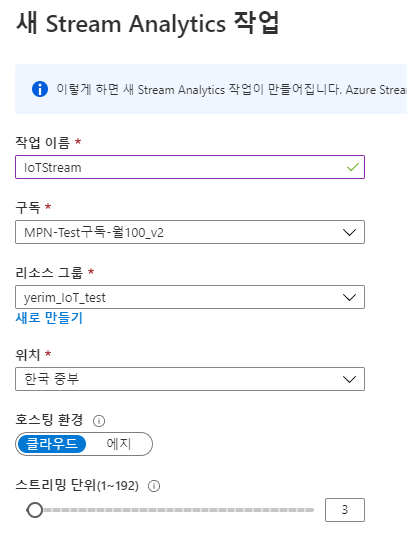
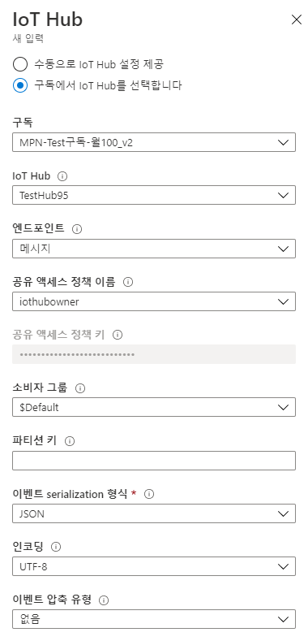
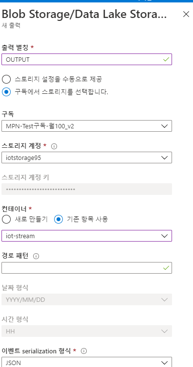
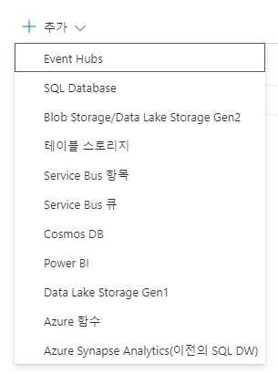
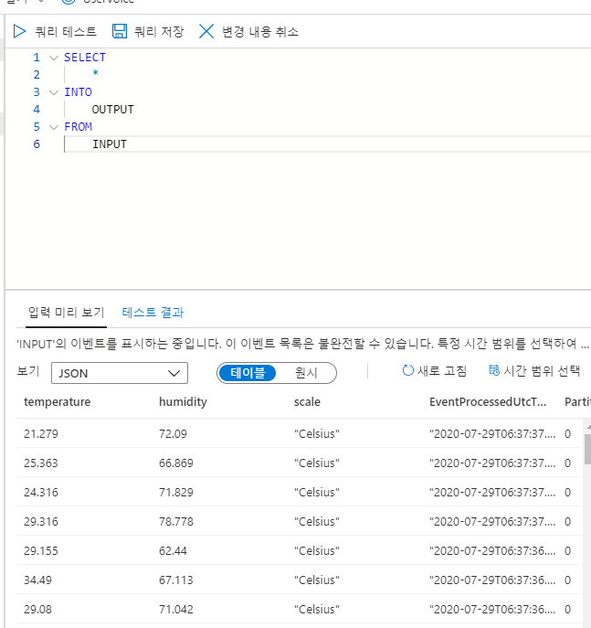
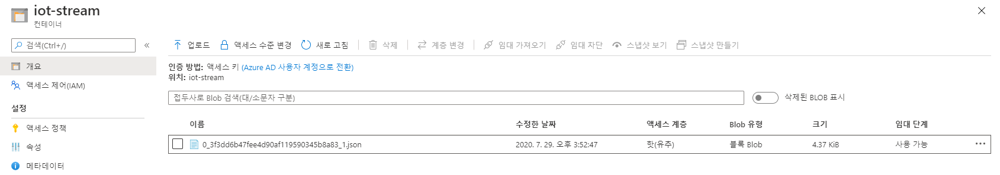

Stream Analytics job은 여러 원본으로부터 스트리밍 데이터를 동시에 분석 및 처리하도록 설계된 이벤트 처리 엔진입니다. Azure IoT Hub, Azure Event Hubs, Azure Blob Storage에서 원본 데이터를 수집할 수 있습니다. 이번 포스팅에서는 IoT Hub에서 Azure Stream Analytics job으로 데이터를 전송하고, 결과를 Blob 스토리지에 저장하는 방법을 소개합니다.
목차는 다음과 같습니다.
- Azure Stream Analytics job 생성
- Blob Storage 생성
- 입력 및 출력 설정
- 쿼리 수정
- 작동 테스트
1. Azure Stream Analytics job 생성
-
Azure Portal에서 스트림 분석 작업을 검색하여 선택합니다.
-
작업 이름과 구독, 리소스 그룹, 위치 등을 지정하고, 호스팅 환경은 클라우드로 선택합니다.

2. Blob Storage 생성
작업 결과를 저장할 Blob Storage를 생성합니다.
-
스토리지 계정을 추가합니다.
-
생성된 스토리지 계정에서 Blob Service > 컨테이너를 클릭합니다.
-
공용 액세스 수준을 Blob으로 지정하여 컨테이너를 생성합니다.
3. 입력 및 출력 설정
-
스트림 분석 작업 메뉴에서 입력을 선택하고, +스트림 입력 추가를 클릭하여 IoT Hub를 선택합니다.
-
입력 별칭을 INPUT으로 입력하고, 미리 생성해둔 IoT Hub와 연결합니다.

-
스트림 분석 작업 메뉴에서 출력을 선택하고, +추가를 클릭하여 Blob Storage를 선택합니다.
-
출력 별칭으로 OUTPUT을 입력하고, 앞서 생성한 스토리지 계정과 컨테이너를 선택합니다.

참고 : 출력 대상으로 설정할 수 있는 목록은 다음과 같습니다.

4. 쿼리 수정
- 스트림 분석 작업 메뉴에서 쿼리를 선택하고, 쿼리문을 수정합니다. 출력 별칭과 입력 별칭을 각각 INTO와 FROM 아래 입력합니다.

-
스트림 분석 작업을 시작합니다.
-
결과를 확인합니다. 결과는 인코딩 형식으로 지정한 JSON 파일로 저장됩니다.

스트림 분석 작업을 만드는 간단한 방법을 알아보았습니다. 출력으로 Power BI나 Service Bus 큐 등을 지정하면 데이터를 시각화하거나 특정 메시지에 대한 일괄 알람을 적용하는 작업을 할 수 있습니다. 또한, 여러 이벤트를 시간 순서대로 수행하도록 만들 수 있습니다.
다음 포스팅에서는 IoT Hub에서 서비스 버스로 라우팅을 설정하고, 로직 앱을 이용해 메일 알람을 설정하는 방법을 알아보겠습니다.